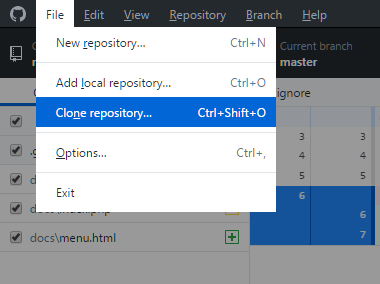
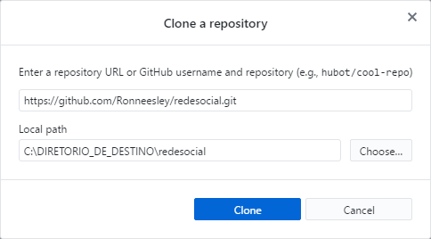
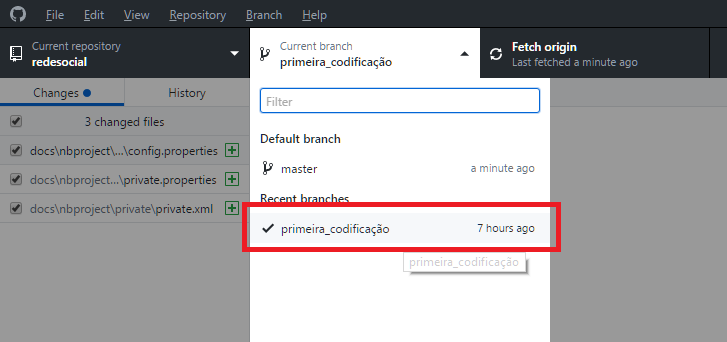
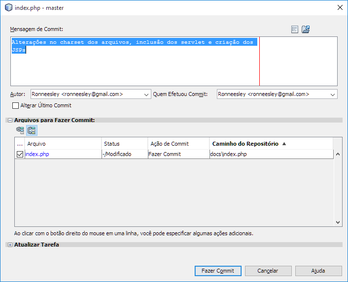
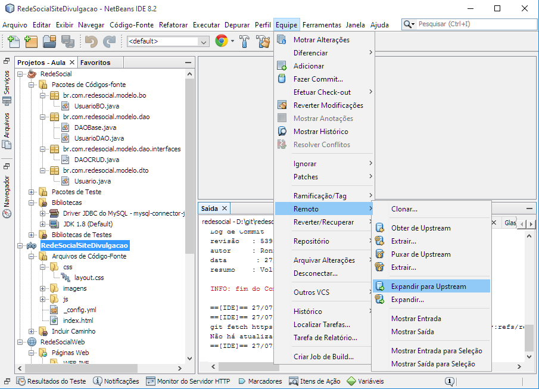
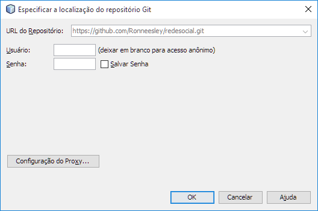

O que é?
Este projeto tem como finalidade construir uma rede social que possa ser utilizado em várias situações escolares ou não escolares. Podendo servir como meio de interação entre docentes e discentes ou até mesmo como instrumento de comunicação com egressos.
Como colaborar?
Para colaborar é necessário:
- Cadastrar-se no GitHub
- Baixar o aplicativo desktop do GitHub
- Copiar o repositório para a sua máquina conforme os passos e imagens abaixo
- Clique em File depois em Clone repository...
- Na janela coloque a URL https://github.com/Ronneesley/redesocial.git e escolha o local onde será copiado o projeto, substitua o texto DIRETORIO_DE_DESTINO para isto.
  -
Mude o ramo (Branch) para primeira_codificacao
conforme a imagem abaixo

Quais ferramentas utilizar?
As ferramentas utilizadas para edição dos projetos são: Notepad++ 7.4.2, NetBeans 8.2 (utilizar versão completa), Pencil 3.0.4 e MySQL Community Edition 5.7+
Como enviar o que fiz?
Após abrir e editar os arquivos do projeto no NetBeans, você deve:
-
Acessar o menu Equipe e em seguida Fazer Commit... conforme
apresentado na imagem abaixo:

-
Na janela que aparecer você deve digitar uma mensagem informando o que você alterou.
Apenas os arquivos que foram alterados são enviados. Veja a figura abaixo:
 -
Acesse novamente o menu Equipe, depois o submenu Remoto, depois a opção
Expandir para Upstream para enviar os arquivos, conforme a figura abaixo:

-
Digite seu usuário GitHub e sua senha, depois clique em Ok conforme a imagem abaixo.
Pronto! Sua alteração foi enviada.

© Turma SI & Colaboradores